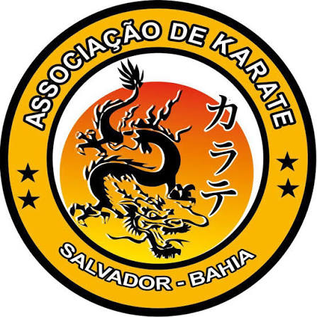

Aprenda a arte do Karate tradicional em Salvador. Aulas para todas as idades, focadas no desenvolvimento físico, mental e na defesa pessoal.
Matricule-seTendo como liderança principal Sensei Guilherme Lopes é uma das figuras históricas e mais respeitadas do Karatê no estado da Bahia. Discípulo do lendário Ivo Rangel — pioneiro e grande divisor de águas da arte marcial em território baiano —, Guilherme seguiu os passos de seu mestre na consolidação e institucionalização do esporte na região.
Desenvolvimento da coordenação motora, foco, disciplina e respeito desde cedo.
Condicionamento físico, alívio do estresse e técnicas avançadas de defesa pessoal.
Preparação física e tática de Kata e Kumite para atletas de alto rendimento.
Acompanhe nosso trabalho e agende sua aula através das redes sociais oficiais: